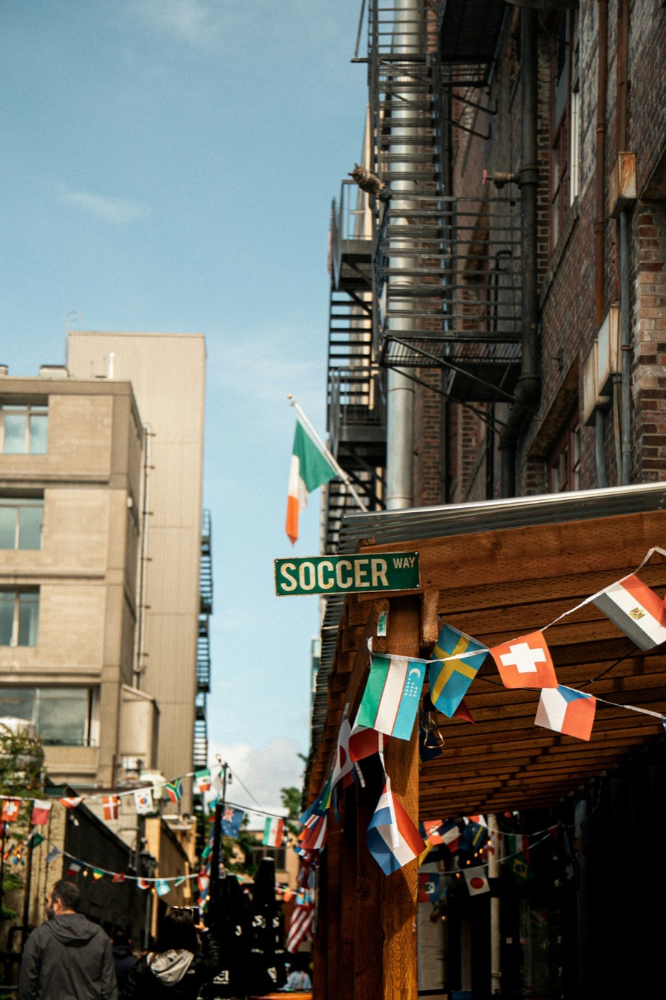

Hi, I'm Chloe — I turn messy, human data into stories you can actually scroll through.
I chase questions that are a little too specific to be useful and a little too fun to let go. (also, as you may have gathered: cats.)
Projects

From GOAT to Scapegoat→
Reddit turned on Argentina between two World Cup finals. A scrollytelling analysis of the sentiment flip — same team, opposite reaction. Did they change, or did we?
In the notebook
Something’s brewing. Check back.
There is, I promise, a cat on that fire escape.
Goodies The whole shelf →
Chart Lab→
A sandbox for picking the right chart. Poke at the shapes until the data makes sense — no sign-up, nothing to install.
Something next
Small, free, and probably a little odd. Same as the last one.
About
I'm drawn to the messy end of the field: language, opinion, the parts of a dataset that don't fit neatly in a column. I like taking something noisy and human and turning it into something a person would actually want to read.
Most of what I make starts as a question that's a little too specific to be useful and a little too fun to let go — like whether the internet truly turned on a football team, or whether we just changed. Then I scrape, model, and draw until there's an answer worth looking at.
Usual tools: Python, D3, a good deal of NLP, and more coffee than is strictly advisable.